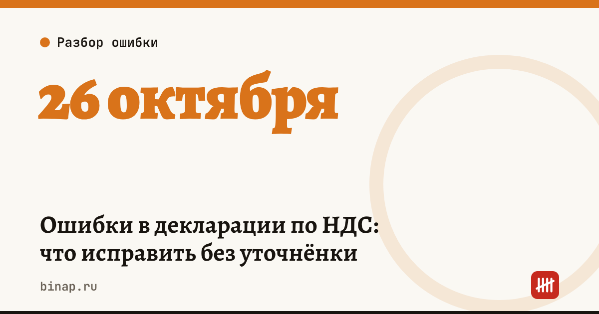

Ошибки в декларации по НДС: что исправить без уточнёнки

Декларацию по НДС за III квартал нужно сдать до 26 октября 2026 года: 25-е выпадает на воскресенье. По данным Клерка, ФНС на днях напомнила, какие ошибки можно закрыть пояснениями, а какие — только уточнёнкой.
Главное правило. Уточнённая декларация обязательна, если из-за ошибки налог к уплате занижен. Если налог не изменился, уточнёнка не обязательна — хотя ФНС советует подавать её и в этом случае (письмо от 03.12.2018 № ЕД-4-15/23367@).
Хватит пояснений, если ошиблись в реквизитах счёта-фактуры и это не повлияло на налог: - номер счёта-фактуры; - дата счёта-фактуры; - ИНН контрагента.
Нужна уточнёнка, если ошибка в стоимости или сумме НДС, а также если: - счёт-фактура не попал в книгу продаж; - в книге покупок дубль или вычет по счёту-фактуре с ошибками; - вычет заявлен по операции, которая НДС не облагается.
Что сделать до отправки: 1. Выгрузите книги покупок и продаж за квартал. 2. Сверьте номера, даты и ИНН в счетах-фактурах с договорами и первичкой. 3. Отдельно проверьте суммы и ищите дубли в книге покупок: это самые дорогие ошибки. 4. Нашли ошибку до 26 октября — исправьте и отправьте декларацию один раз, без пояснений и уточнёнок.